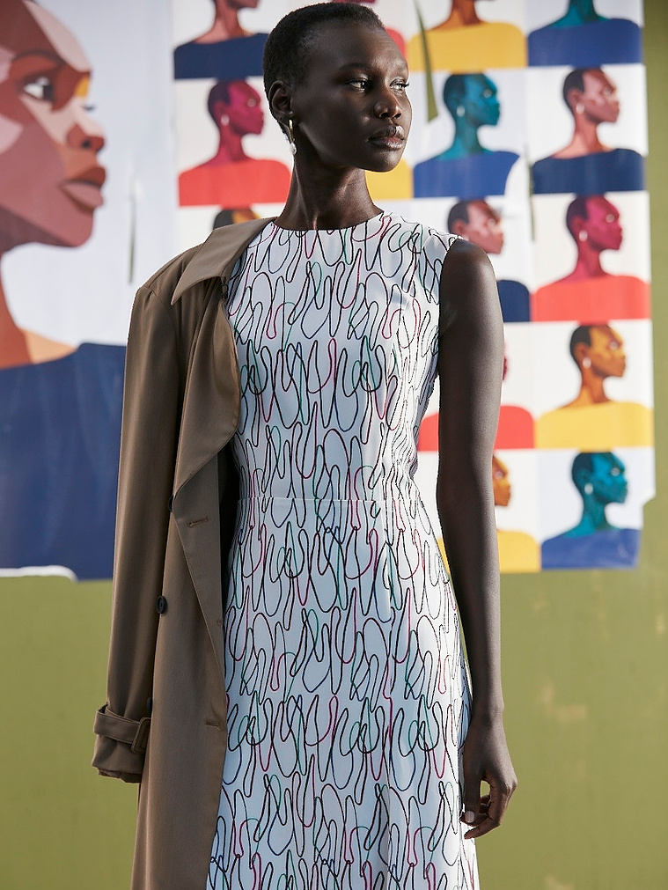
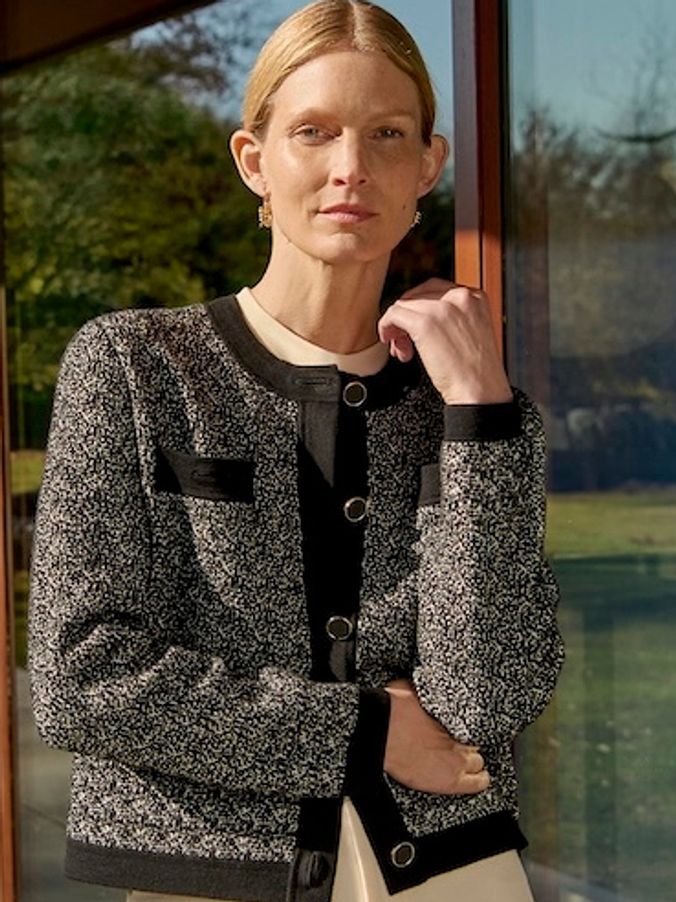

Modular production. Layered storytelling.
A multi-platform campaign produced through a two-day studio shoot, using modular set builds to support layered storytelling across product and narrative moments.
Strategic casting and cross-functional collaboration enabled high-volume delivery of assets across digital, retail, and social. Launched as part of M.M.LaFleur's Ready to Run initiative — a national civic program supporting women running for public office — the campaign drove significant press coverage and brand visibility.

National Coverage
National press coverage across The Cut, Adweek, and Glossy, amplifying the Ready to Run initiative and its cultural impact.
Campaign to Platform
Deployed across digital platforms and national media, with pre-negotiated usage extending asset circulation beyond the initial launch. Campaign hero image anchoring the Ready to Run initiative, connecting product to purpose-driven storytelling supporting women running for public office.
Systems that support story
Production pinboard used to track narrative and product coverage across the two-day studio shoot, aligning teams and ensuring cohesive asset delivery. Multi-generational casting supported layered storytelling without expanding production scope.
The modular studio build enabled multiple narrative environments across the two-day production.